Dashboard Design Principles
'The greatest value of a picture is when it forces us to notice what we never expected to see'John Tukey, 'Exploratory Data Analysis', 1977
'A picture is worth a thousand words. An interface is worth a thousand pictures'Ben Shneiderman, 2003
'Data becomes useful knowledge of something that matters when it builds a bridge between a question and an answer. This connection is the signal.' Stephen Few, 'Signal: Understanding What Matters in a World of Noise, 2015
'Graphical excellence is that which gives to the viewer the greatest number of ideas in the shortest time with the least ink in the smallest space.' Edward R. Tufte, 'The Visual Display of Quantitative Information', 2nd. Ed.
Data Visualisation should enable us to present insights and better representations of the truth so that businesses can make accurate and informed decisions in the least amount of time.
Choosing The Right Chart Type
Displaying Nominal Data
Use bar charts for nominal data. A line chart suggests progression of data values left to right.

 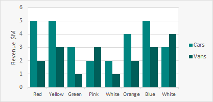
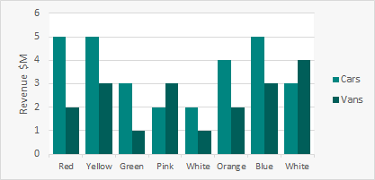 
Displaying Qualitative Data
Bar charts, particularly stacked bar charts, work well with Qualitative data.
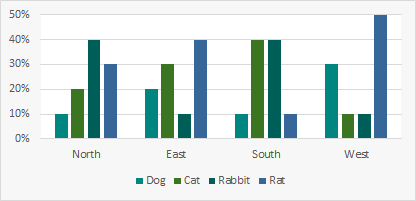

Displaying Sequential Data - Trends Over Time
Always left to right. Line graphs are good for comparing multiple trend categories.


Bubble Charts
Bubble charts are a powerful chart for showing data across 3 dimensions for multiple categories.


Take Care With Bubbles - They Can Be Deceiving
In the charts below the UK value is half the US value but the UK bubble is deceivingly large.
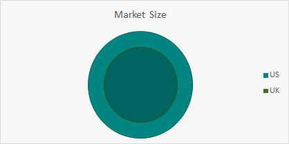

Use Pie Charts With Care
If you use a pie chart label the segments. For example which has larger sales, Rabbit or Rat?


A Well Structured Bar Chart Is Often Much Clearer and More Compact Than a Pie Chart
Visual perception works better comparing attribute line length vs. angles and areas.
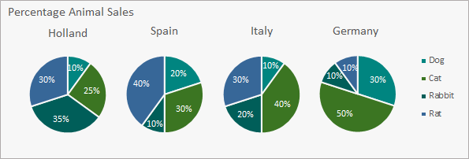
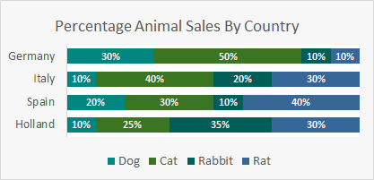
Using Colours Appropriately
Use colours sparingly - only use colour when it has meaning. Note: 10% males and 1% females cannot distinguish between Red and Green


Use colour as a dimension.
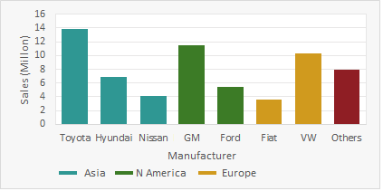

Ordering Data
Consider Ordering By Measures Rather Than Categories
Ordering charts my the measure can help with comparisons and finding minimum/maximum values.


Grouping
Group Low Value Categories To Save Space And Focus On The Key Items.
 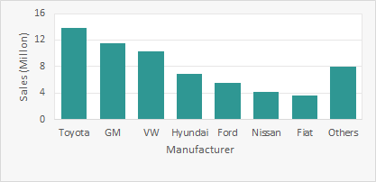
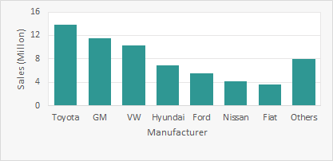
Chart Axis
Axis Scales
Nominal: Discrete items from a shared category but with no intrinsic order: e.g. Red, Green, Blue, Yellow.
Ordinal: Items that have an intrinsic order but do not correspond to quantitative values: e.g. A,B,C,D,E
Interval: Items that have an intrinsic order and correspond to quantitative values: e.g. Jan, Feb, Mar, Apr, May...
Orientation
Charts should normally be wider than they are tall - typically 50% wider than tall.
Eye is naturally practised in detecting deviations from the horizon.
Where the X and Y axis values are compared (for example in scatter plot) then the Chart can be square to avoid any bias.
Axis Labels
Avoid overlapping labels - rotate text where appropriate. However if you see users tilting their head, consider swapping the axes.
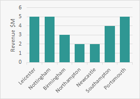
 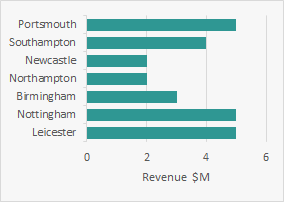
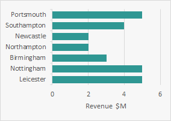
Bar Chart Axis Start Point
Bar Charts should normally start from 0 on the measure axis. A compressed axis can hide the differences.


Consider Using Charts To Plot Percentage Change Rather Than Value
Use colours sparingly - only use colour when it has meaning. Note: 10% males and 1% females cannot distinguish between Red and Green
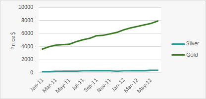
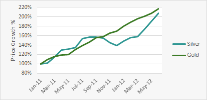
Formatting Charts
Remove Unnecessary Chart Decoration
Any pixels which are not directly conveying data should be avoided/removed.


3D Charts
Avoid 3D Charts - They rarely help to explain the data.
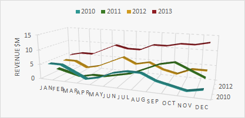

Simplify Charts
Consider Breaking Up Difficult To Read Charts
Charts with multiple categories can confuse the message. Consider using a collection of simple charts in its place.
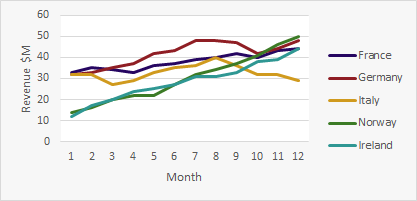
Create one chart for each category. Ensure all charts share the same axis range so charts can be compared.
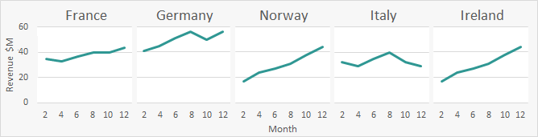
In Table Charts
Small charts embedded in tables can bring the data to life.
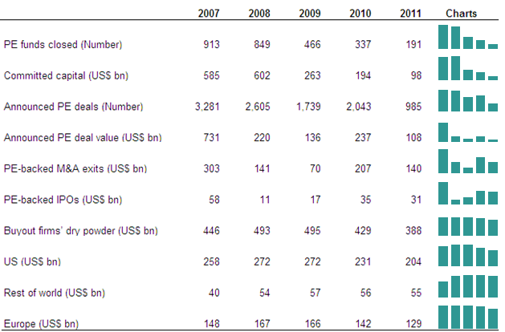
Tables
Creating Effective Tables
- Do not use a grid to define rows and columns
- To separate rows, use only whitespace whenever possible
- Second choice: use a subtle fill color ('zebra striping') or a subtle gridlines (grey, dotted)
- Columns rarely need anything other than whitespace and proper alignment (see next page)
- Use simple dark borders below the column headings and at the bottom of the table
- Text alignment/formatting Column headers should align with the information contained in the columns:
- Text - Align left
- Dates - Align left; make consistent width
- Numbers - Align right; use consistent number of decimal places
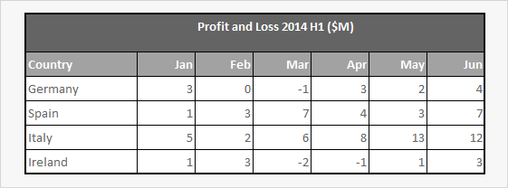
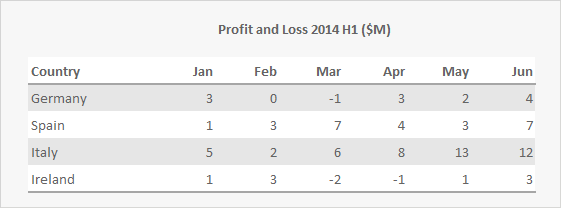


Using Colour In Tables Can Highlight Important Cells
Limit the number of cells being coloured otherwise the value of the highlight can be lost. Limit the number of colours used.